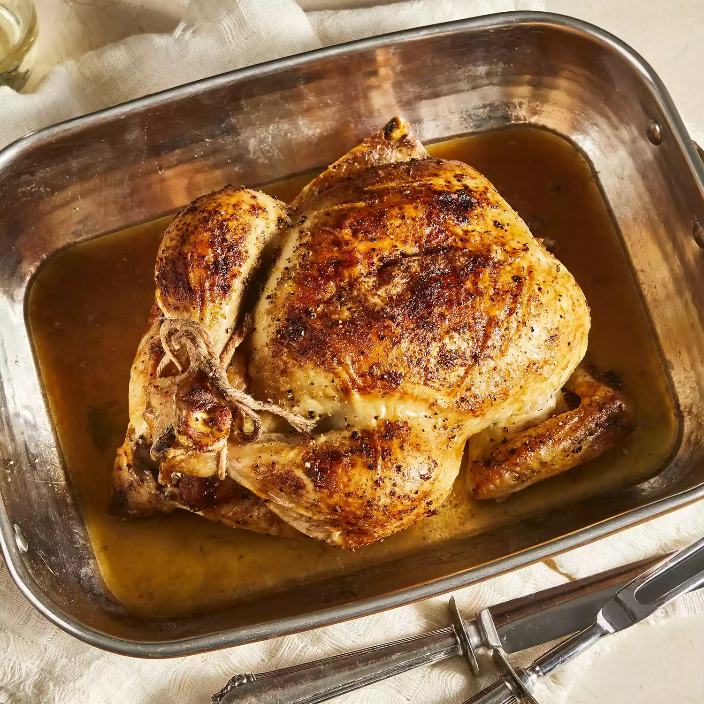

My grandmother's recipe for roasted chicken. We are German and she used to do it this way all the time. I never have had a chicken this juicy before; this little trick works and makes the people eating it go silent. It's funny. We nibble on the celery after.
Preheat oven to 350 degrees(175 degrees celsius
Place chicken in a roasting pan, and season generously inside and out with salt and pepper. Sprinkle inside and out with onion powder. Place 3 tablespoons margarine in the chicken cavity. Arrange dollops of the remaining margarine around the chicken's exterior. Cut the celery into 3 or 4 pieces, and place in the chicken cavity.
Bake chicken uncovered in the preheated oven until no longer pink at the bone and the juices run clear, about 1 hour and 15 minutes. An instant-read thermometer inserted into the thickest part of the thigh, near the bone, should read 180 degrees F (82 degrees C). Remove from heat and baste with melted margarine and drippings. Cover with aluminum foil and allow to rest about 30 minutes before serving.
Read our picks for the best kitchen toolsto make cooking your favorite recipes that much easier.
Serve with a side of roasted broccoli or roased cauliflower